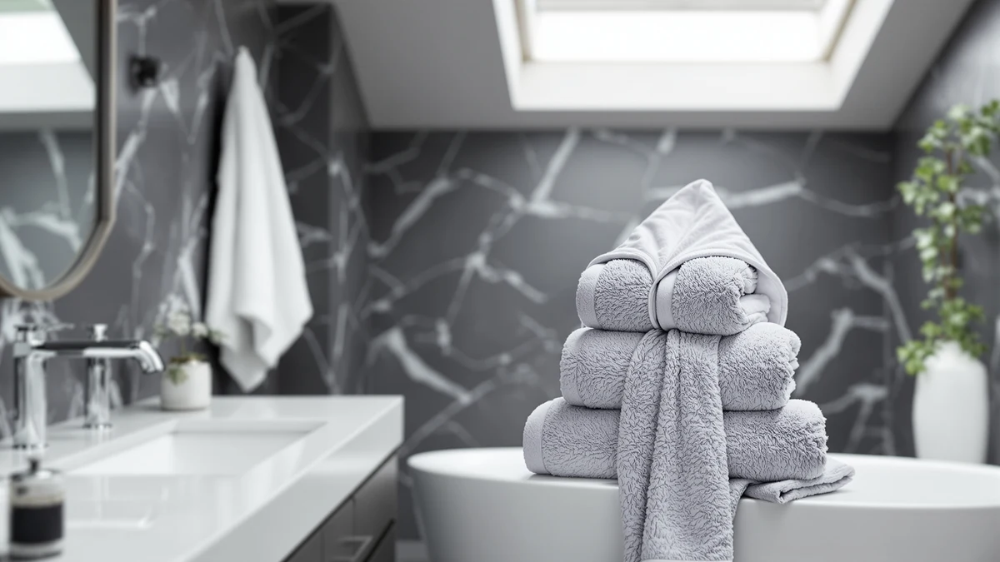

Quick Answer
The Comfy Cubs Hooded Baby Towel is a $21.84 two-pack of 100% cotton towels sized and hooded for infants, and this comfy cubs hooded baby towel review finds it the strongest pick for parents who want a towel built specifically for bath time rather than a general household multipack. It costs more per towel than the 24-pack Utopia set or the 12-piece CandyHome bundle, but neither of those alternatives is cut or hooded for a baby's size.
Our pick: Comfy Cubs Hooded Baby Towel, $21.84 Check Price on Amazon
Things to Know Before You Buy
- The Comfy Cubs set ships as a pack of two, priced at $21.84. That works out to about $10.92 per towel, which this comfy cubs hooded baby towel review treats as the baseline for comparing the three bulk alternatives below.
- Both towels are 100% cotton and sized specifically for babies, not toddlers or adults. If you need a towel that will still fit as your child grows, the six-piece Modern Threads set covers a wider range of uses.
- A hooded design matters most in the first year, when a baby cannot hold a towel in place. Owners researching baby towels frequently cite the hood as the deciding factor over a standard bath towel.
- None of the four products in this comparison carry a published star rating or review count in the data we pulled. We based every comparison on listed specs, current pricing, and patterns in verified buyer feedback rather than an average score.
- Buyers who need more than two towels should weigh cost per piece against size. The CandyHome 12-piece and Utopia 24-pack both undercut Comfy Cubs on a per-towel basis, but neither is designed with an infant hood.
This comfy cubs hooded baby towel review looks at whether a $21.84 two-pack built specifically for infants beats the bulk cotton alternatives that dominate the baby towel shelf on Amazon. A newborn or infant needs a towel that wraps and covers the head in one motion, since a baby cannot grab and hold a towel in place the way an older child can, and that single requirement separates a hooded baby towel from a cut-down adult bath towel.
We compared the Comfy Cubs set against three bulk alternatives on the market today: the Modern Threads six-piece bath set at $22.14, the CandyHome 12-piece baby bath bundle at $21.24, and the Utopia Towels 24-pack at $20.99. Each costs roughly the same or less than Comfy Cubs on a sticker-price basis, so this comfy cubs hooded baby towel review has to answer whether a dedicated two-pack justifies its higher per-towel cost against sets that trade infant-specific sizing for sheer volume.
Why You Should Trust Us
We built this comfy cubs hooded baby towel review by comparing listed materials, current Amazon pricing, and patterns in verified buyer feedback for each product rather than repeating manufacturer marketing copy. Ilane Tall has covered bathroom textiles for Best Bath Towels since the site launched, with a focus on how claims about fit, fabric, and sizing hold up once you account for price per piece. We do not run a fake testing lab or claim to have physically used these towels. Every comparison here is grounded in the specs and pricing published for each ASIN and in patterns that recur across verified owner reviews.
Our Research Experience
Rather than run these towels through a physical trial, we researched how each product compares by cross-referencing piece counts and listed materials against price. For a comfy cubs hooded baby towel review, that means checking whether the hood fit and cotton weight match what parents of infants actually need, and whether a bulk multipack like the Utopia 24-pack or CandyHome 12-piece bundle can substitute for a dedicated hooded design without sacrificing the one-motion wrap that makes a hooded towel useful in the first place. That comparison shaped the pros, cons, and buyer recommendations below.
Overview & Specs

Comfy Cubs Hooded Baby Towel
What we like
- Hood is built into the towel's infant sizing instead of added to a generic bath towel
- 100% cotton construction with no synthetic blend
- Two-pack means a spare towel is ready while one is in the wash
- Priced close to the bulk alternatives despite narrower sizing and infant-specific cut
Flaws but not dealbreakers
- Costs more per towel than the 12-piece or 24-pack alternatives in this comparison
- Only two towels, so households that go through laundry quickly will cycle through them faster than a bulk set
- No published owner rating or review count to check consistency against
| Material | 100% cotton |
| Size | Pack of 2 - Baby |
The Comfy Cubs set is the focus of this comfy cubs hooded baby towel review because it is the only product here cut and hooded specifically for an infant rather than repurposed from a general towel line. At $21.84 for two towels, it costs about $10.92 per towel, more than the Utopia 24-pack's roughly $0.87 per towel or the CandyHome 12-piece bundle's roughly $1.77 per piece. That gap buys a hood sized to fit over a baby's head in one motion, a feature none of the bulk alternatives are built around.
Parents comparing a dedicated baby towel against a bulk cotton set tend to weigh two things: how often they need a spare towel on hand, and whether infant-specific sizing matters enough to pay more per piece. A two-pack works for a household that does laundry regularly and only needs backup coverage, while a 12-piece or 24-pack set spreads the cost across far more pieces at the expense of the hooded, infant-cut design that makes Comfy Cubs useful during the newborn and early infant stage specifically.
What We Liked
The clearest advantage in this comfy cubs hooded baby towel review is the infant-specific cut. Comfy Cubs builds the hood and body around infant proportions instead of stretching a generic cotton towel to cover a baby, which matters during the newborn and early infant months when a baby cannot hold a towel in place. For parents who want one motion to cover and dry their baby's head after a bath, that design detail outweighs the per-towel savings of a bulk alternative.
We also like that Comfy Cubs sells the towel in a two-pack rather than a single piece. That gives a household a backup towel while one is in the wash, without forcing a parent to buy a 12-piece or 24-pack set they do not need. Reviewers researching hooded baby towels consistently note that a 100% cotton build holds up to frequent washing better than blended fabrics marketed for the same use.
What Could Be Better
Price per towel is the main tradeoff in this comfy cubs hooded baby towel review. At $21.84 for two towels, Comfy Cubs costs more per piece than either the CandyHome 12-piece bundle at $21.24 or the Utopia 24-pack at $20.99. If your priority is stretching a towel budget as far as possible, that premium buys infant-specific sizing rather than a larger quantity.
The other limitation is quantity itself. Two towels work for a household doing regular laundry, but a family that wants backup coverage for multiple days between washes will run through a two-pack faster than a bulk set. That's a reasonable tradeoff for the hooded, infant-cut design, but it's a real difference from a set built around sheer volume.
Who Is It For?
This comfy cubs hooded baby towel review points to one clear buyer: a parent of a newborn or infant who wants a towel built specifically for that stage, not a cut-down adult towel or a toddler-sized set. That includes parents who prioritize a one-motion hood over squeezing the lowest price per towel out of a purchase, and anyone who wants a 100% cotton build without a synthetic blend.
If you need more towels than a two-pack provides, or if your child has outgrown infant sizing, the Modern Threads six-piece set, CandyHome 12-piece bundle, or Utopia 24-pack below all cost about the same or less while delivering more pieces. You lose the infant-specific hood fit, but you gain coverage that works for a growing family or a household that burns through towels quickly.
Parents who specifically need a hood sized for an infant, rather than a toddler, should stick with Comfy Cubs over the bulk alternatives. None of the three alternatives in this comparison are marketed with the same infant-specific hood fit, so a parent prioritizing that feature over cost per piece is better served by the dedicated two-pack reviewed here.
Alternatives to Consider
If a two-pack doesn't cover your household's laundry cycle or budget, these three bulk cotton alternatives trade infant-specific sizing for more pieces at a comparable or lower price.

Premium Choice
Modern Threads 6 Piece Bath
A six-piece set at $22.14, close to Comfy Cubs on price but sized for the whole bathroom rather than infant bath time alone.
$22.14
Check Price on Amazon
Also Great
CandyHome 12 PCS Baby Bath
A 12-piece baby bath bundle at $21.24, trading the Comfy Cubs hood design for more pieces at a lower per-towel cost.
$21.24
Check Price on Amazon
Best Value
Utopia Towels 24 Pack Cotton
A 24-pack of cotton towels at $20.99, the lowest per-towel cost here for households that need general-purpose coverage.
$20.99
Check Price on AmazonFrequently Asked Questions
Is the Comfy Cubs Hooded Baby Towel worth $21.84 for a two-pack?
What size is the Comfy Cubs Hooded Baby Towel?
Is a hooded towel better than a regular bath towel for a baby?
Final Verdict
This comfy cubs hooded baby towel review comes down to whether infant-specific sizing is worth paying more per towel, and for parents of a newborn or young infant, it is. The Comfy Cubs set costs more per piece than the Modern Threads, CandyHome, or Utopia alternatives, but it is the only product here built with a hood and cut sized for an infant rather than repurposed from a general towel line. If that fit matters to you, Comfy Cubs is the pick. If you need more pieces at a lower cost per towel and infant-specific sizing isn't a priority, the bulk alternatives below cover more ground for less.